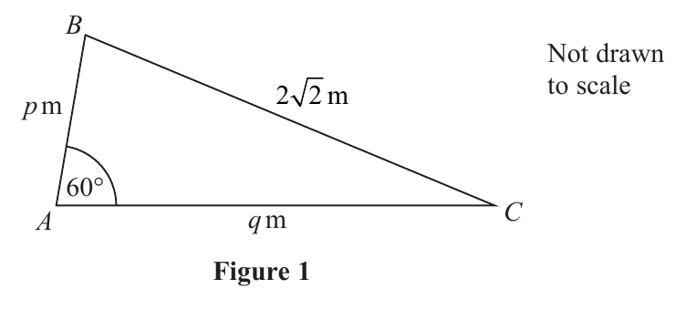
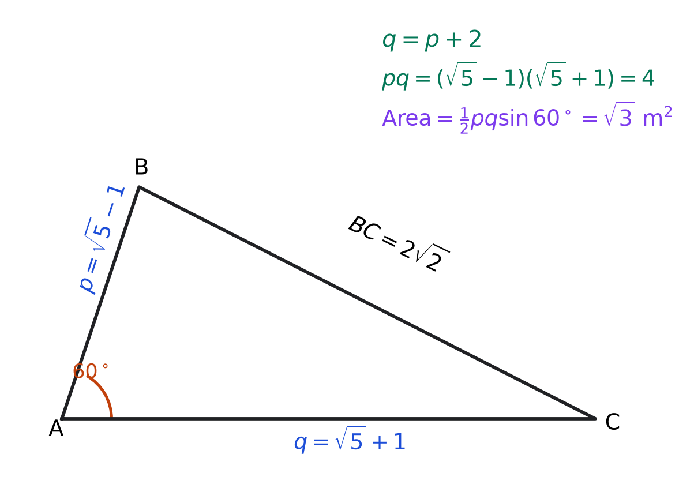
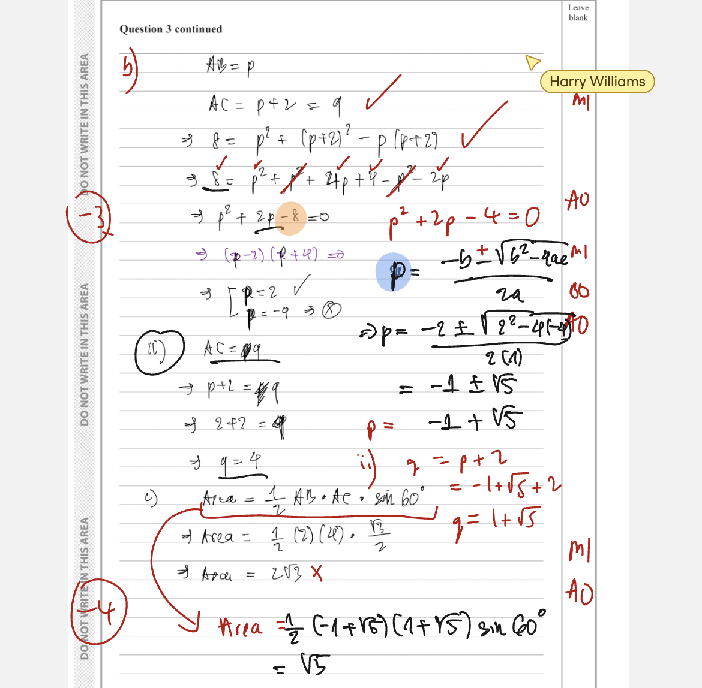

In this question you must show all stages of your working.
Solutions relying on calculator technology are not acceptable.Figure 1 shows the plan view of a flower bed.
The flowerbed is in the shape of a triangle $ABC$ with
- $AB=p$ metres
- $AC=q$ metres
- $BC=2\sqrt2$ metres
- angle $BAC=60^\circ$

(a) Show that $p^2+q^2-pq=8$ (2)
Given that side $AC$ is 2 metres longer than side $AB$, use algebra to find
(b) (i) the exact value of $p$,
(ii) the exact value of $q$. (5)Using the answers to part (b),
(c) calculate the exact area of the flower bed. (2)
[9 marks: (a) 2, (b) 5, (c) 2]
Strategy and why. All three side lengths and the included angle at $A$ are connected by the cosine rule. Side $BC$ is opposite $\angle BAC$, so it must be the isolated side on the left.
Formula first. For sides $a,b,c$ with angle $C$ opposite $c$, $c^2=a^2+b^2-2ab\cos C$. Here $c=BC=2\sqrt2$, $a=AB=p$, $b=AC=q$, and $C=60^\circ$. Therefore
$$\left(2\sqrt2\right)^2=p^2+q^2-2pq\cos60^\circ.$$Evaluate each exact value:
$$\left(2\sqrt2\right)^2=4\cdot2=8,\qquad \cos60^\circ=\frac12.$$So
$$8=p^2+q^2-2pq\left(\frac12\right)=p^2+q^2-pq,$$which gives the required statement
$$\boxed{p^2+q^2-pq=8}.$$Check. The cross term must be negative because $\cos60^\circ$ is positive, and its coefficient becomes exactly one after $2\times\tfrac12$. Transfer trigger: when two adjacent sides and their included angle are named—or when the third side is opposite that angle—write the cosine rule and label the opposite pairing before substituting.
Exam presentation. The command “show that” requires the cosine-rule line and exact simplification, not merely the printed result. Preserve brackets around $2\sqrt2$ before squaring; otherwise it is easy to square only the radical or coefficient. Name the side opposite $60^\circ$ before substitution to demonstrate the correct geometric pairing.
Strategy and why. Translate “$AC$ is 2 metres longer than $AB$” into $q=p+2$, then substitute into the exact relation from part (a). Solve the resulting quadratic and reject the negative length.
$$8=p^2+(p+2)^2-p(p+2).$$Expand each bracket separately:
$$8=p^2+(p^2+4p+4)-(p^2+2p).$$Collect terms and move $8$ left:
$$8=p^2+2p+4\quad\Longrightarrow\quad p^2+2p-4=0.$$Formula first. For $Ap^2+Bp+C=0$, $p=\dfrac{-B\pm\sqrt{B^2-4AC}}{2A}$. Here $A=1$, $B=2$, $C=-4$:
$$p=\frac{-2\pm\sqrt{2^2-4(1)(-4)}}{2}=\frac{-2\pm\sqrt{20}}{2}=\frac{-2\pm2\sqrt5}{2}=-1\pm\sqrt5.$$A length is positive. Since $-1-\sqrt5<0$, reject it:
$$\boxed{p=\sqrt5-1\text{ m}}.$$Then
$$q=p+2=(\sqrt5-1)+2=\boxed{\sqrt5+1\text{ m}}.$$Check. $q-p=2$ exactly. Also $pq=(\sqrt5-1)(\sqrt5+1)=4$, while $p^2+q^2=12$, so $p^2+q^2-pq=8$. Transfer trigger: convert comparative wording to an equation first, retain exact surds, and test the final lengths in both the comparison and original geometric relation.
Exam presentation. Keep $\sqrt{20}=2\sqrt5$ exact and attach metres only after choosing the positive root. The question requests both $p$ and $q$, so explicitly substitute the accepted $p$ into $q=p+2$ rather than leaving the second side implicit. A final comparison $q-p=2$ confirms the wording.
Strategy and why. The exact area formula for two sides with their included angle uses $AB=p$, $AC=q$, and $\angle BAC=60^\circ$. Keep the surds exact and exploit the conjugate product.
Formula first.
$$\text{Area}=\frac12ab\sin C.$$Substitute the exact part (b) values:
$$\text{Area}=\frac12(\sqrt5-1)(\sqrt5+1)\sin60^\circ.$$The two factors are conjugates, so apply $(u-v)(u+v)=u^2-v^2$:
$$ (\sqrt5-1)(\sqrt5+1)=5-1=4.$$Also $\sin60^\circ=\sqrt3/2$. Hence
$$\text{Area}=\frac12\cdot4\cdot\frac{\sqrt3}{2}=\boxed{\sqrt3\text{ m}^2}.$$The answer is exact, as requested; a decimal such as $1.73$ would not satisfy the command.
Check. Since $p\approx1.236$, $q\approx3.236$, and $\sin60^\circ\approx0.866$, the area is about $0.5(1.236)(3.236)(0.866)\approx1.732$, agreeing with $\sqrt3$. Transfer trigger: for exact triangle areas, preserve surds, simplify conjugate products before inserting trig values, and attach squared units.
Annotated answer diagram.

Marked lesson evidence.

Exam presentation. Show the conjugate product as its own line. It converts two awkward side surds into the exact product $4$, making the final simplification transparent. End with $\mathrm{m}^2$ because area, unlike the side lengths, requires squared units. Retain $\sqrt3$ rather than replacing it with a rounded decimal.